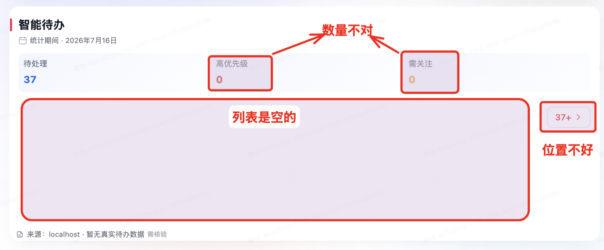
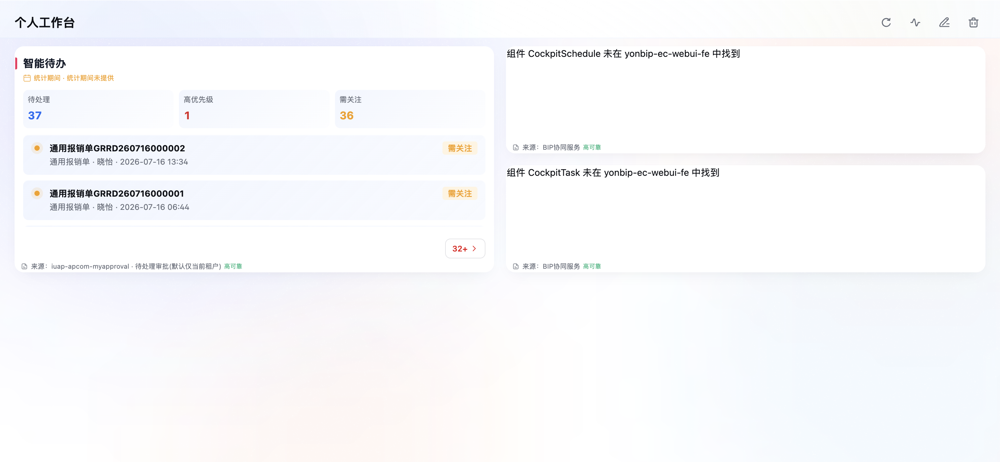
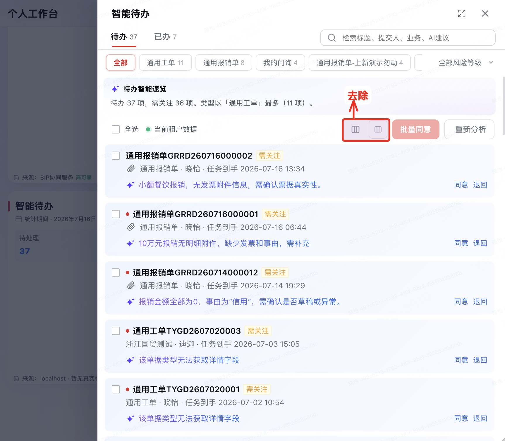
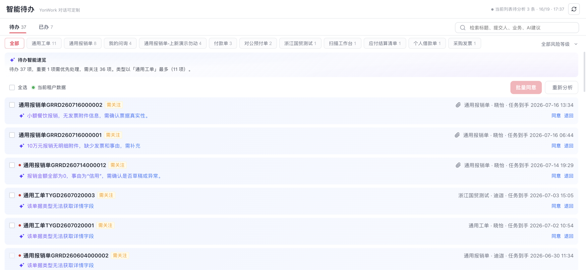

智能待办驾驶舱卡片


验收点：统计采用真实快照；列表有真实明细；来源为高可靠；剩余数量入口位于卡片内容区右下方且不被裁切。
智能待办抽屉工具栏


验收点：工具栏不再显示列设置或自定义字段入口；批量同意与重新分析保持原有位置和安全状态。


验收点：统计采用真实快照；列表有真实明细；来源为高可靠；剩余数量入口位于卡片内容区右下方且不被裁切。


验收点：工具栏不再显示列设置或自定义字段入口；批量同意与重新分析保持原有位置和安全状态。